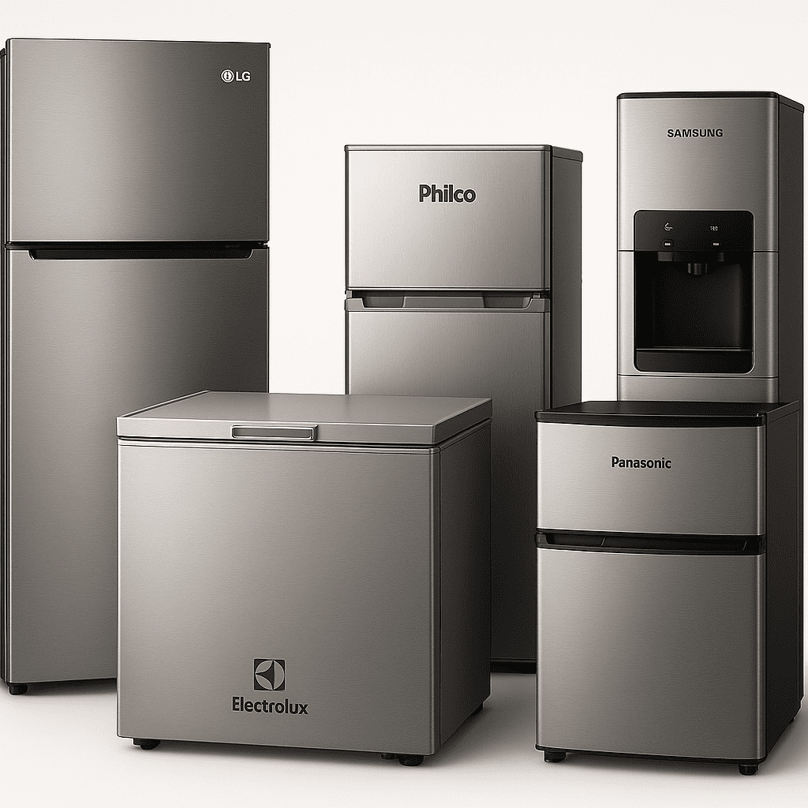
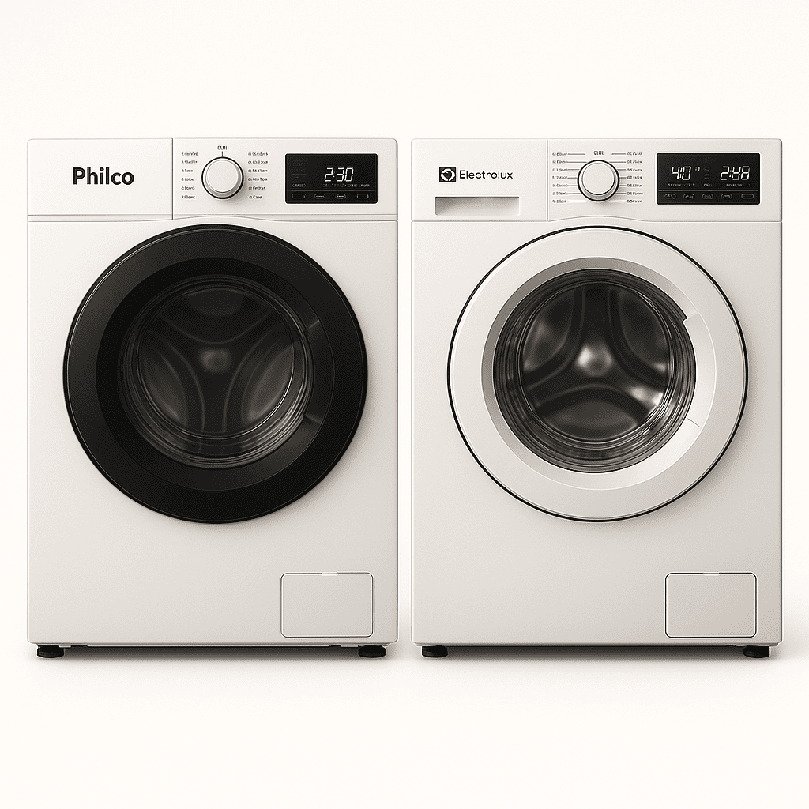
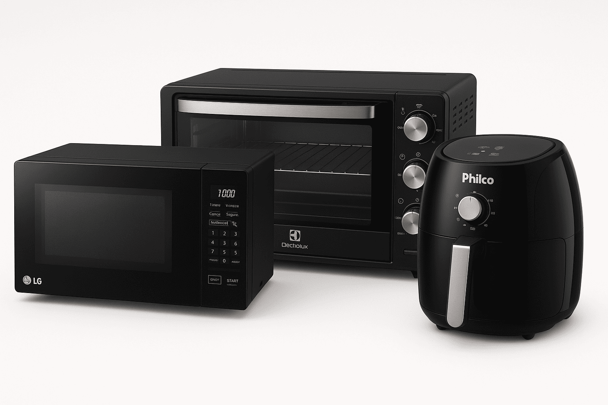

Com quase 10 anos de experiência, a Thander Assistência Técnica oferece consertos com qualidade, produtividade e garantia de 3 meses.

Refrigeração
Mantendo seus alimentos e bebidas na temperatura ideal.
- Geladeiras
- Freezers
- Frigobares
- Bebedouros
- Adegas

Lavanderia
Cuidamos das suas roupas com consertos em:
- Máquinas de Lavar (todas as marcas)
- Lava e Seca (todas as marcas)

Cozinha
Soluções para seus equipamentos de preparo.
- Micro-ondas
- Air Fryers
- Fornos Elétricos